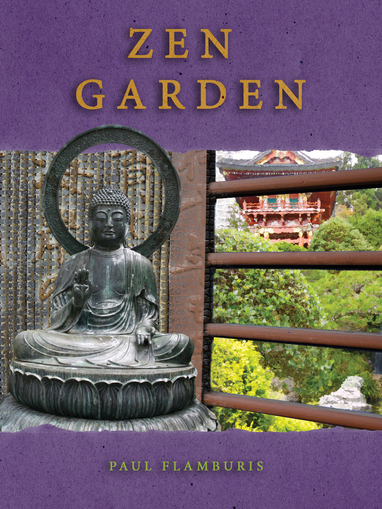

I began this tutorial by roughing a quick mask around an image of a Buddha statue. This allowed me to isolate the statue from its background without permanently losing any pixels. I converted the quick mask into a more permanent Layer Mask, which is saved as an Alpha Channel in the Channels tab. The mask edge was also refined with a combination of the Quick Select tool, white and black Brush strokes, and the Edge Refine sliders in the Mask Properties window. A mask was applied to the window portion of the Window layer by going into the Cyan channel (which contained most of the windows' color) and adjusting the Levels on the mask. This selected only the portion between the wooden slats, and masking this section of the image gave the impression of looking through a window at the greenery in the layer below. A Glass filter was applied to this mask to enhance the illusion of glass. A fading tile filter was also applied to the Writing layer by creating a linear black and white gradient on a Layer Mask and applying the tile filter to said mask. Paper overlays were brought over from a separate Photoshop project by selecting the paper with a Color Range and copying the layer into the main Photoshop project. With the Text tool, titles were added to the paper, which went over the Buddha layer on the bottom, and under it on the top. The Hues and Saturation Adjustment tool was used to make the paper purple. A mask was applied to the title Text to make the letters the original color of the paper. Finally, a drop shadow effect was applied to both pieces of text.